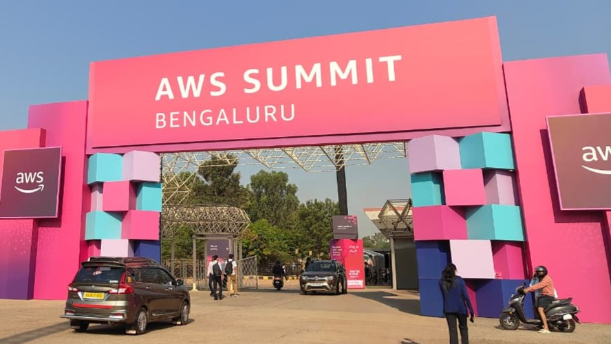
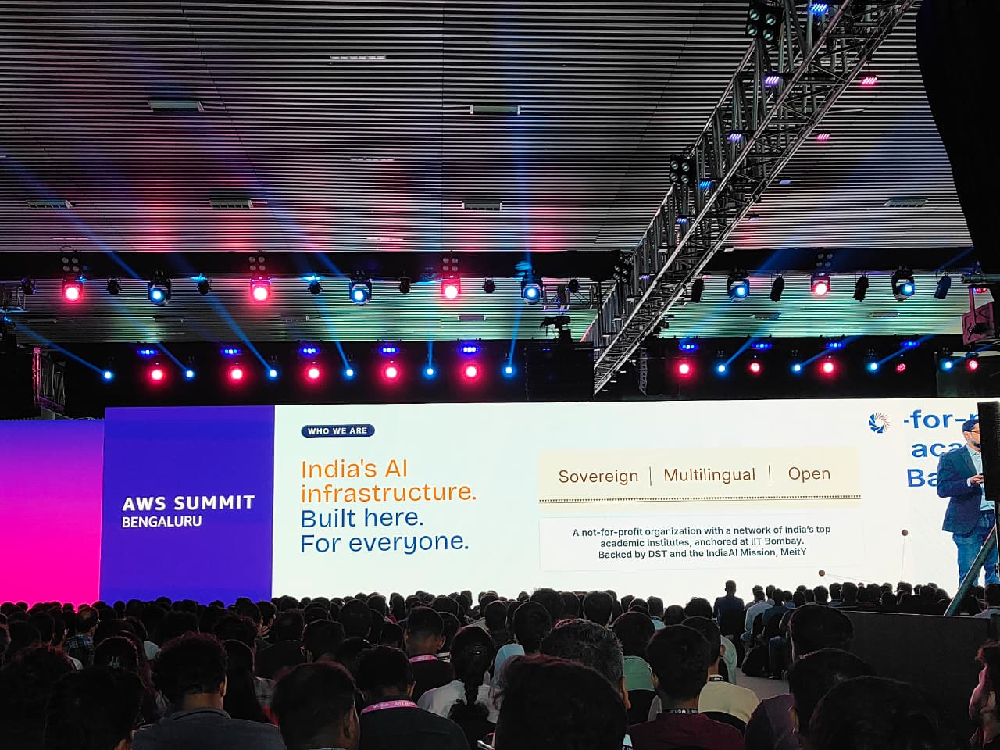
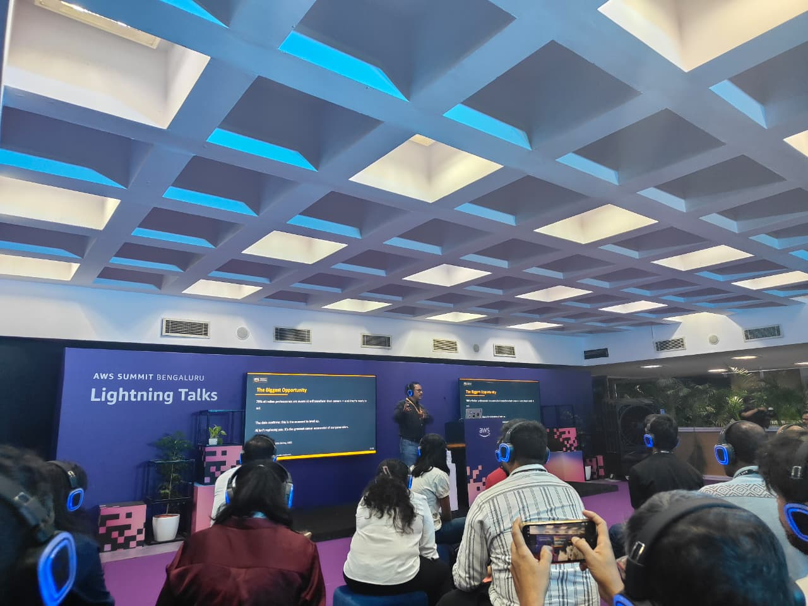
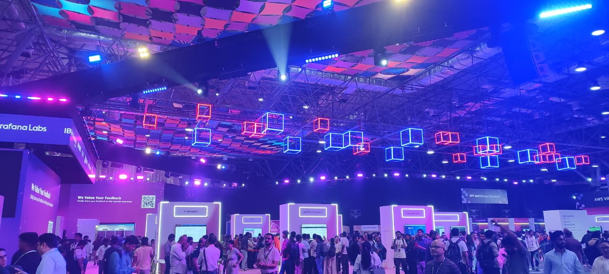

I went in expecting the usual things — new services, architecture diagrams, feature announcements, a few demos around AI and cloud infrastructure.
And those were definitely there. But that's not what stayed with me after the event.
What stayed were the conversations around decisions. Not "what does this service do?" — but why it was designed this way, what trade-offs were made, what breaks when systems scale, and what needs to stay simple even when complexity is possible. That shift changed how I looked at everything throughout the day.

Heavily builder-focused — and it showed
The event was large-scale, but unlike general cloud conferences that stay high-level, this edition was clearly designed for people actively building systems. Even the atmosphere was different.
People weren't discussing features casually. Most conversations were around implementation challenges, architecture choices, latency, scaling, and operational issues. That framing carried through from the keynote all the way into the expo floor.
Less about showcasing, more about how things are actually built
Speakers including Pratyush Kumar, Satinder Singh, and Murali Swaminathan focused less on announcing technology and more on the reasoning behind how systems get built in practice. That difference became noticeable very quickly.
In tutorials, systems look clean.
In production, every decision has consequences.
A system might be fast but expensive, scalable but difficult to maintain, powerful but overly complex. That's where trade-offs begin — not as an afterthought, but as the central design challenge.

Amazon Bedrock — grounded in reliability
Several discussions centered on Amazon Bedrock, AI agents, and cloud-native AI systems. Even these conversations stayed grounded. The question wasn't "how do we use AI?" — it was more precise.
How do we make AI systems reliable enough to work in real environments?
- Reliability at scale
- Orchestration complexity
- Governance and control
- Latency under real load
Building a demo is one thing. Building something dependable is another. The sessions consistently operated in the second territory — which made them feel more mature than typical AI showcase talks.
Experienced engineers kept saying: simplify
One thing I noticed throughout the day was how often speakers talked about simplifying systems — not adding components, not introducing complexity for the sake of architecture. Intentionally reducing unnecessary moving parts.
That stood out because most technical content online encourages building more complicated systems. Here, repeatedly, the message was the opposite.
Simple systems are easier to maintain, debug, and scale.
It's an obvious statement until you're in a room where experienced engineers are actively pushing back against unnecessary abstraction in real systems. Then it becomes a principle with teeth.
Thinking, not features
The talks by Pratyush Kumar and Satinder Singh were memorable for what they didn't do — they didn't walk through service features. They spoke about the thinking behind engineering decisions.
Real engineering rarely happens with ideal conditions. The talk focused on how to reason clearly when something has to give.
The best architecture on paper is rarely the best in production. Practical constraints shape the right answer every time.
Not just how systems work — but where and why they break. That understanding changes how you design from the beginning.
Tools keep changing. The ability to think through trade-offs stays relevant regardless of which technology you're working with — that's the more durable takeaway.

Not theoretical scaling — actual scaling
A significant portion of sessions focused on real-world architecture challenges — the kind where latency matters, costs matter, failures matter, and operational overhead compounds over time.
- Latency under real traffic
- Infrastructure cost at scale
- Failure modes and recovery
- Operational overhead over time
Almost every session circled back to the same point — building systems is largely about choosing what not to do. Every component added is a maintenance burden, a failure surface, a cost.
The interesting conversations weren't about the demos
Between sessions, the AWS Village and expo areas were active — AI workflows, infrastructure solutions, cloud-native systems, developer tooling all on display. But the conversations worth staying for weren't about the flashy interfaces.
- Why certain architectural decisions were made
- What challenges teams faced after deployment
- How systems evolved — and what had to change
- What they would do differently the second time

AI, infrastructure, and system design — treated as one thing
Something I appreciated was how the summit balanced AI discussions, cloud infrastructure, system design, and operational engineering — without treating them as separate tracks that don't talk to each other.
From learning services to understanding systems
As the day progressed, I found myself paying less attention to individual services and more attention to the reasoning behind decisions — why one team chose simplicity over flexibility, why another optimized for reliability instead of speed, why some architectures intentionally avoided abstraction that seemed useful on paper.
- Learning new tools
- Service capabilities
- Feature announcements
- Reasoning behind systems
- How trade-offs get made
- What makes systems survive
Those details — the reasoning behind the choices, not the choices themselves — were far more valuable than learning any new feature.
Not tools. A better way of thinking about how things are built.
I went to the summit expecting to learn about tools. I left thinking more about systems — and more importantly, about the decisions behind systems.
Learning gives you options.
Building forces you to choose.
Those choices — what to simplify, what to optimize, what trade-offs to accept — are what actually define a system in the real world. That's the more durable thing to leave with than any specific service announcement.
Building systems is largely about choosing what not to do.
Trade-offs aren't a failure of design — they are the design. The clearer you are about what you're giving up, the better the decisions you make about what to keep.